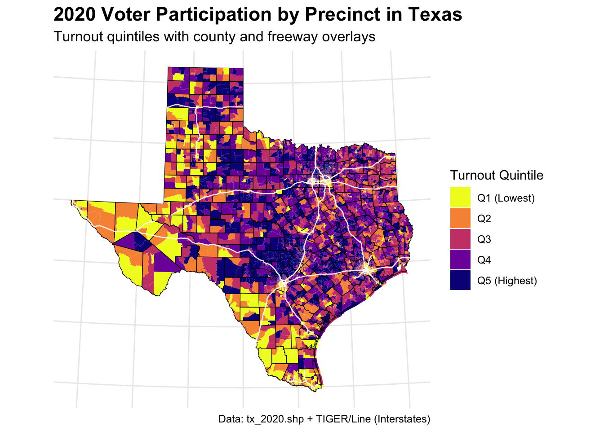

# === Libraries ===
library(sf)Linking to GEOS 3.13.0, GDAL 3.8.5, PROJ 9.5.1; sf_use_s2() is TRUElibrary(dplyr)
Attaching package: 'dplyr'The following objects are masked from 'package:stats':
filter, lagThe following objects are masked from 'package:base':
intersect, setdiff, setequal, unionlibrary(ggplot2)
library(viridis)Loading required package: viridisLitelibrary(tigris) # for county boundaries and roadsTo enable caching of data, set `options(tigris_use_cache = TRUE)`
in your R script or .Rprofile.options(tigris_use_cache = TRUE)
# === Step 1: Read the precinct shapefile ===
precincts <- st_read("/Users/john/Library/Mobile Documents/com~apple~CloudDocs/Home/John/GIS/EPPS6356/dataviz/website/tx_2020/tx_2020.shp", quiet = TRUE)
# === Step 2: Get county boundaries FIRST (needed for cropping roads) ===
tx_counties <- counties(state = "TX", year = 2020, cb = TRUE) %>%
st_transform(st_crs(precincts)) # match CRS
# === Step 3: Get primary roads, filter to Interstates, and clip to TX ===
tx_roads <- primary_roads() %>%
st_transform(st_crs(precincts)) %>%
filter(grepl("^I-", FULLNAME)) %>%
st_intersection(st_union(tx_counties))Retrieving data for the year 2024Warning: attribute variables are assumed to be spatially constant throughout
all geometries# === Step 4: Coerce vote columns to numeric, compute total_votes and turnout ===
vote_cols <- c("G20PRERTRU", "G20PREDBID", "G20PRELJOR", "G20PREGHAW", "G20PREOWRI")
precincts <- precincts %>%
mutate(across(all_of(vote_cols), ~ as.numeric(as.character(.)))) %>% # Ensure numeric
mutate(
total_votes = rowSums(across(all_of(vote_cols)), na.rm = TRUE),
participation_rate = total_votes / as.numeric(G20VR)
) %>%
filter(is.finite(participation_rate) & participation_rate > 0)
# === Step 5: Create turnout quintiles ===
precincts <- precincts %>%
mutate(
turnout_quintile = cut(
participation_rate,
breaks = quantile(participation_rate, probs = seq(0, 1, 0.2), na.rm = TRUE),
include.lowest = TRUE,
labels = c("Q1 (Lowest)", "Q2", "Q3", "Q4", "Q5 (Highest)")
)
)
# === Step 6: Plot the map ===
ggplot() +
# Precinct fill
geom_sf(data = precincts, aes(fill = turnout_quintile), color = NA) +
# County boundaries
geom_sf(data = tx_counties, fill = NA, color = "black", size = 0.2) +
# Freeways overlay
geom_sf(data = tx_roads, color = "white", size = 0.4, alpha = 0.7) +
# Color scale
scale_fill_viridis_d(name = "Turnout Quintile", option = "cividis", direction = -1) +
labs(
title = "2020 Voter Participation by Precinct in Texas",
subtitle = "Turnout quintiles with county and freeway overlays",
caption = "Data: tx_2020.shp + TIGER/Line (Interstates)"
) +
theme_minimal() +
theme(
legend.position = "right",
plot.title = element_text(face = "bold", size = 16),
plot.subtitle = element_text(size = 12),
axis.text = element_blank(),
axis.ticks = element_blank()
)